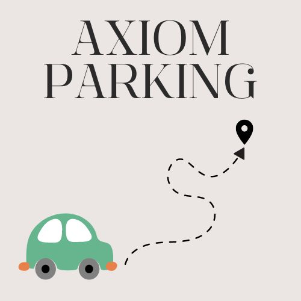

About Me
Motivated Engineering student pursuing a Bachelor's degree in Computer Science actively seeking internships in the tech industry. Proficient in programming languages with a strong foundation in algorithms and data structures. Eager to apply theoretical knowledge in a practical setting to gain hands-on experience and contribute to cutting-edge technologies. Good communication, teamwork skills and proven ability to adapt quickly acquired through collaborative projects. Committed to continuous learning, collaborating with industry professionals and further developing technical skills.
Areas of Interest
- Web Development
- Machine Learning
- Data Structures & Algorithms
Connect with Me
Education and Skills
Education
- 2021-2025:
Maturi Vankata Subba Rao Engineering College - Bachelor's degree in Computer Science
(CGPA: 9.17) - 2019-2021:
Sri Chaitanya Junior College - MPC Intermediate
(Percentage: 98%) - 2019:
St. Paul's High School - Schooling
(Percentage: 95%)
Leadership Experience
- Volunteer at NSS-MVSR unit
Skills and Interests
Skills
- Data Structures & Algorithms using C++
- Python
- Java
- Database System
- Web Development (HTML, CSS, JS)
- UI/UX
- Django
- AIML (Artificial Intelligence and Machine Learning)
Interests
- Machine Learning
- Public Speaking
- Problem Solving in Leetcode, GFG, HackerRank
- Reading Blogs
Training and Courses
- DBMS - Oracle
- Machine Learning - Stanford University (Coursera)
- Web Development - FreeCodeCamp
- C++, Python - Spoken Tutorial
Projects
Axiom Parking using IoT
Axiom Parking is an IoT project which tells where the parking slot is empty or not which we can check in our mobile so this application whether the parking slot is empty. As the population is increasing this could be very helpful in tracking the parking slot. And we can save so much time as we are not spending so much time waiting for the slot. And this Project is done by using "CISCO PACKET TRACER" using Python.
Malaria Detection using ML
Malaria Detection is a Prediction website which predicts whether the person is infected with malaria or not by taking input a microscopic image of a blood cell. This is done using ML with the help of a Dataset and we trained the model with the dataset so that it predicts accurately and tells how confident it is. We used modules such as Flask, Keras, NumPy, PIL and this is done using Python.
GitHub Link: [Insert Link Here]
Attendance Management System
Python script is a simple facial recognition system designed to detect faces in a live video stream, recognize known faces, and update an attendance record accordingly. It utilizes the OpenCV library for computer vision tasks and relies on a custom implementation of facial recognition.The attendance update is likely handled by the update_attendance function, which takes the recognized name as input and performs the necessary operations to mark the person as present.
GitHub Link: [Insert Link Here]
Contact Me
If you've got a project in mind, why not get in touch! Let's work together. You can send me a message by filling this form.